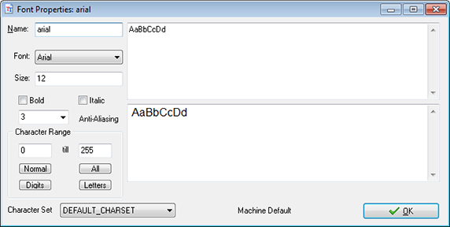

To create a font resource in your game, use the item Create Font in the Resources menu or use the corresponding button on the toolbar. The following form will pop up.

As always you should give your font resource a name. Next you can pick the name of the font. Also you can indicate its size and whether it should be bold and/or italic. Realize that large fonts take a lot of memory to store. So you are strongly recommended not to use fonts with a size larger than say 32. (It is possible to scale the fonts while running the game.) An example of the indicated font is shown at the bottom.
A font typically consist of 256 characters, numbered from 0 to 255. But in general you use only a small portion of these. So default in a font only the characters from 32 till 127 are stored in the font. The more characters you store in the font the more memory it will use. You can change the character range used. To see the index of each character you can use the Character Map that can be found in the Windows Start menu under Accessories/System Tools. Some standard ranges can be indicated using the buttons: The Normal range from 32 till 127, the All range from 0 till 255, the Digits range that only contains the 10 digits, and the Letters range that contains all uppercase and lowercase letters. Other ranges can be used by typing in the first and last character index. If a character does not lie in the range it is replaced by a space.
Normally you have a large number of different fonts installed on your computer and there are websites where you can download hundreds more. The problem is that if you use them in your game and then give your game to somebody else to play there is a big chance that the other person does not have the same fonts installed on his or her computer. To avoid this, Game Maker embeds all the fonts you want to use in the game file, but only in the stand-alone games. So if you give a stand-alone game to someone else you don't need to provide the font files. But if you give somebody the editable version of your game and you use fancy fonts, you better also provide the person with the correct font files.
The Anti-Aliasing drop box allows you to specify the level of anti-aliasing applied to the font. There are 4 levels from 0 to 3. You will currently have to run the game in order to see the fully anti-aliased font.
You can also select the Character Set codepage the font uses, and this will allow basic multi-languge support.
Please note that the render window does not currently show the current character or AA selection, it's simply a sample of the FONT.
| Converted from CHM to HTML with chm2web Pro 2.85 (unicode) |